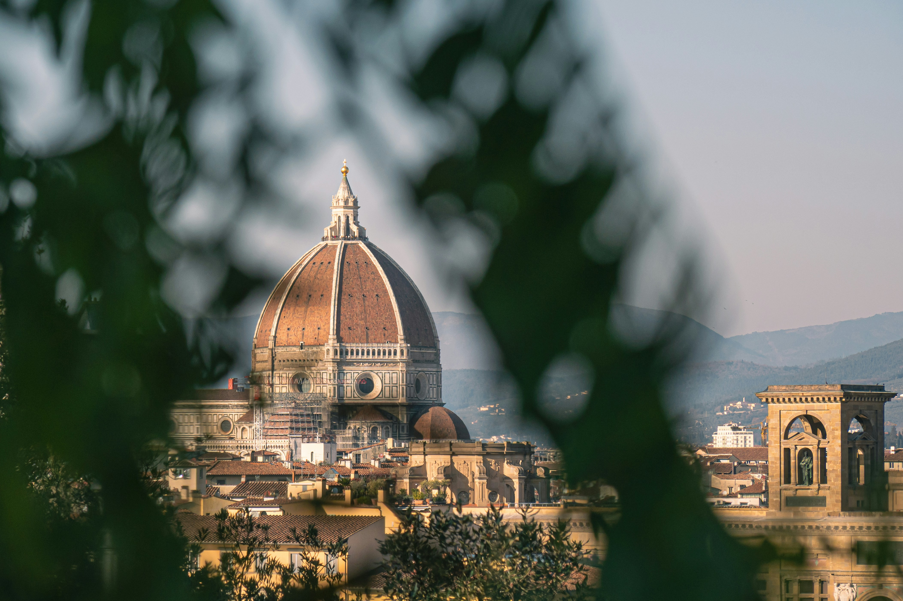

Floransa (İtalyanca: Firenze), İtalya’nın Toskana bölgesinde yer alan ve dünya tarihinin en önemli kültürel merkezlerinden biri olan bir şehirdir. Şehir, Rönesans’ın doğduğu yer olarak bilinir ve sanat, mimari, edebiyat ve bilim alanlarında büyük gelişmelere ev sahipliği yapmıştır.
Floransa’nın tarihi, Romalılar dönemine kadar uzanır. MÖ 59 yılında kurulan şehir, zamanla büyüyüp gelişti. Orta Çağ’da, Floransa zenginleşen ticaret yolları ve bankacılık sektörü sayesinde Avrupa’nın en güçlü şehir devletlerinden biri haline geldi. Medici ailesinin 15. yüzyıldan itibaren Floransa’ya hükmetmeye başlaması, şehrin tarihinde bir dönüm noktası oldu. Bu güçlü aile, sanatı ve bilimi destekleyerek Rönesans’ın başlamasına öncülük etti. Leonardo da Vinci, Michelangelo, Raphael ve Botticelli gibi sanatçılar Floransa’da yetişti ve eserlerini burada sergiledi.
Floransa, 1865-1871 yılları arasında İtalya Krallığı'nın başkenti olarak hizmet verdi. Günümüzde ise Floransa, tarihî mirası, sanat eserleri ve mimari güzellikleriyle dünya çapında bir turizm merkezi olarak öne çıkmaktadır. Şehir, 1982 yılında UNESCO Dünya Mirası Listesi'ne dahil edilmiştir.
Floransa, adeta bir açık hava müzesi gibidir ve her köşesi tarih ve sanatla doludur. İşte Floransa’da mutlaka görülmesi gereken başlıca yerler:
Floransa’nın kalbinde yer alan bu muhteşem katedral, şehrin en ikonik yapılarından biridir. İnşası 1296 yılında başlamış ve 1436 yılında tamamlanmıştır. Katedralin dış cephesi beyaz, yeşil ve kırmızı mermerle kaplıdır ve Gotik tarzın en güzel örneklerinden biridir. Filippo Brunelleschi tarafından tasarlanan kubbe, Rönesans mimarisinin en önemli başarılarından biri olarak kabul edilir. Katedralin kubbesine çıkarak, şehrin panoramik manzarasını izleyebilirsiniz.

Dünyanın en önemli sanat müzelerinden biri olan Uffizi Galerisi, Floransa’nın merkezinde yer alır ve Medici ailesi tarafından 16. yüzyılda inşa edilmiştir. Müzede, Rönesans döneminin en ünlü eserleri sergilenir. Sandro Botticelli’nin "Venüs’ün Doğuşu" ve Leonardo da Vinci’nin "Müjde" gibi başyapıtları burada görülebilir. Uffizi Galerisi, Floransa’yı ziyaret eden sanatseverler için kaçırılmaması gereken bir duraktır.
Floransa’nın belediye binası olan Palazzo Vecchio, 13. yüzyılda inşa edilmiş bir kaledir. Bu tarihi yapı, Floransa’nın siyasi ve sosyal yaşamında önemli bir rol oynamıştır. İçinde yer alan odalar ve salonlar, zengin fresklerle süslenmiştir. Palazzo Vecchio’nun kulesine çıkarak şehrin manzarasını seyredebileceğiniz bir gözlem noktasına ulaşabilirsiniz.